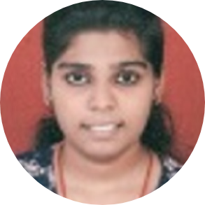

|  | Arundhati KhotElectronics and telecommunication Engineer. |
| Institute Name | Course | University | Year | Percentage / S.G.P.I |
|---|---|---|---|---|
| Vidyalankar Institute Of Technology, Wadala. | Electronics and Telecommunication Engineering (B.E.) | Mumbai University |
2016-2019 |
Sem.8 7.81 Sem.7 7.19 Sem.6 7.89 Sem.5 8.78 Sem.4 7.23 Sem.3 7.32 |
| Vidyalankar Polytechnic, Wadala. | Diploma In Electronics and Telecommunication Engineering | MSBTE |
2013-2016 |
79.68% (1st Class With Distinction) |
| V.N.SULE GURUJI (IES), Mumbai. | S.S.C. | Maharashtra State Board |
2013 |
80.20% |
Basic Overview: Aim of this project is Detection and Prevention of Leakage in various chemical plants where hazardous chemicals are been produced. Hazardous chemicals such as Ammonia, Methane and Butane, etc. The effects of a toxic chemical on your body may be either acute or chronic. Due so much of destruction taking place the idea of Chemical Plant Gas Leakage Detection.
Technology used: Raspberry- Pi, Node-Red, ThingSpeak.
Duration: 8 months
Basic Overview: Aim of this project is to automatically fill the bottles as the motor rotates. The inductive sensor will sense the bottle, capacitive sensor will detect the water level hence motor turns ON. All this is done by using PLC (PROGRAMMABLE LOGIC CONTROLLER).
Technology used: PLC using Ladder logic.
Duration: 8 months.
Basic Overview: Aim of this project is to give a total count of letters that are dropped in letter-box and this count is send in the form of message with the help of Arduino to the mobile phone. So the postman will open only that particular post box which will save his energy and efforts.
Technology used: Arduino-Uno.
Languages: C Language.
Duration: 3 months.
Basic Overview: Aim of this project is to control the motor with the help of TSOP as our IR sensor.
Devices used: DC Motor, TSOP.
Duration: 2 months.